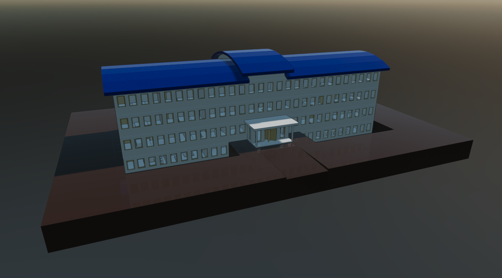

IFC Runtime Models
The Evergine.Runtime.IFC NuGet package provides a powerful and efficient solution for dynamically loading IFC models at runtime. It is designed for real-time 3D applications and integrates seamlessly into your Evergine projects.
Supported IFC Features
The Evergine.Runtime.IFC namespace includes a robust IFC file loader that supports a comprehensive range of mesh features:
✅ Features
1. Supported IFC File Types
- Supports
.ifcfiles in both IFC2x3 and IFC4 schema versions. - Data processing is based on the XBim Toolkit.
2. Geometry
- Supports multiple geometric representations:
- Triangulated face sets: direct 3D meshes based on triangle lists.
- Extruded solids: generated from parametric IFC solid extrusions.
- Boolean operations: geometry resulting from boolean operations (union, difference, intersection).
- Generated meshes include: vertex positions, triangle indices, vertex normals, vertex color.
- Normal generation can be configured using the
useSmoothNormalsflag in the runtime:- When set to
false(default), geometry is generated with flat normals (per face), resulting in a faceted appearance and better performance. - When set to
true, geometry is generated with smooth normals (per vertex), producing visually smoother surfaces.
- When set to
- Mesh generation is optimized for direct integration into Evergine scenes.
3. Basic Materials
- Supports default opaque materials.
- Supports translucent materials by interpreting properties related to glass or semi-transparent materials.
4. Efficient Rendering (Batching)
- Implements an intelligent batching system that groups meshes by material type.
Reduces the total number of draw calls to just two main calls:
- One for opaque objects.
- One for translucent objects.
5. Real‑Time Progress Reporting
- Enables real‑time tracking of each stage of IFC file loading and processing.
- Exposes three
IProgress<int>properties:OpenProgress: progress percentage during file opening.ContextProgress: progress percentage while loading the IFC context.GeometryProgress: progress percentage during geometry generation.
Limitations
1. Platform
- The IFC runtime is currently supported only on Windows desktop platforms.
2. IFC File Handling
- Supported file types include IFC2x3 and IFC4, based on the capabilities of the XBim Toolkit.
⚠️ These limitations are subject to change in future updates.
Getting Started
To start using the Evergine.Runtimes.IFC libraries, simply install the NuGet package and use the following code to load your assets:
protected async override void CreateScene()
{
var assetsService = Application.Current.Container.Resolve<AssetsService>();
IFCRuntime.Instance.OpenProgress = new Progress<int>(p => Console.Write($"\rOpen progress: {p}% "));
IFCRuntime.Instance.ContextProgress = new Progress<int>(p => Console.Write($"\rContext progress: {p}% "));
IFCRuntime.Instance.GeometryProgress = new Progress<int>(p => Console.Write($"\rGeometry progress: {p}% "));
var model = await IFCRuntime.Instance.Read("MyModel.ifc", useSmoothNormals: true);
var entity = model.InstantiateModelHierarchy(assetsService);
this.manager.EntityManager.Add(entity);
}
Custom Shader Support
By default, models are loaded using the Standard Effect (Evergine’s built-in shader). However, if you want to load models using your custom shader, you must pass an additional CustomMaterialAssigner function to the Read method:
protected async override void CreateScene()
{
var assetsService = Application.Current.Container.Resolve<AssetsService>();
var model = await IFCRuntime.Instance.Read("Models/buildingExample.ifc", this.CustomMaterialAssigner);
var entity = model.InstantiateModelHierarchy(assetsService);
this.Managers.EntityManager.Add(entity);
}
Samples
The IFC Runtime has been extensively tested with the following publicly available datasets:
These tests help ensure compatibility with a wide range of real-world meshes, materials, and topology configurations. Below are several representative screenshots of models successfully loaded and rendered at runtime:
Sample screenshots
OpenIFC Model Repository.

Karlsruhe Institute of Technology (KIT), Institute for Automation and Applied Informatics

BIM Whale Sample: BasicHouse